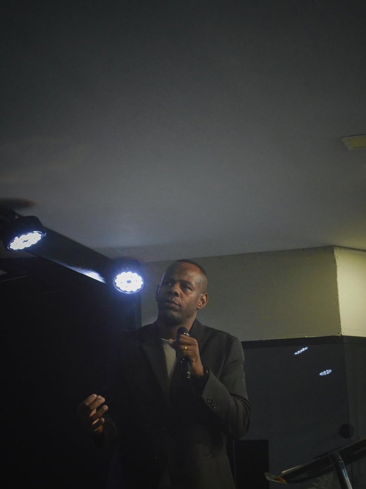
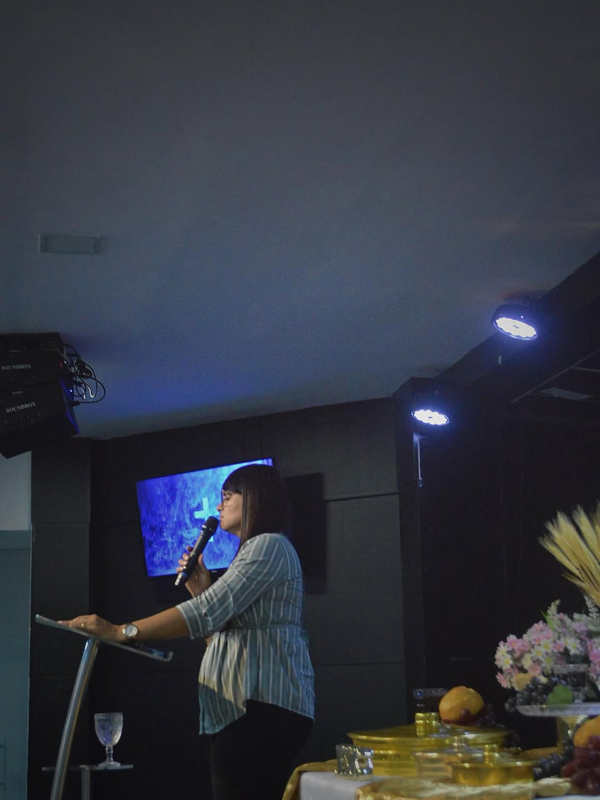

Avivamento, consagração e formação forte na palavra através do nosso Curso Básico de Teologia.

A ADMAV Campo Grande reúne ensino bíblico, consagração e culto com uma linguagem forte para a Zona Oeste.
O Curso Básico de Teologia, o culto jovem e os encontros de mulheres dão forma a uma filial que discipula, fortalece e envia pessoas para servir.
Focados no ensino das sagradas escrituras para equipar o corpo de Cristo em sabedoria e verdade.
Uma juventude engajada, cheia do Espírito, que atrai o avivamento real sobre Campo Grande.
Vínculos poderosos, intercessão e cuidado mútuo, transformando lares.
